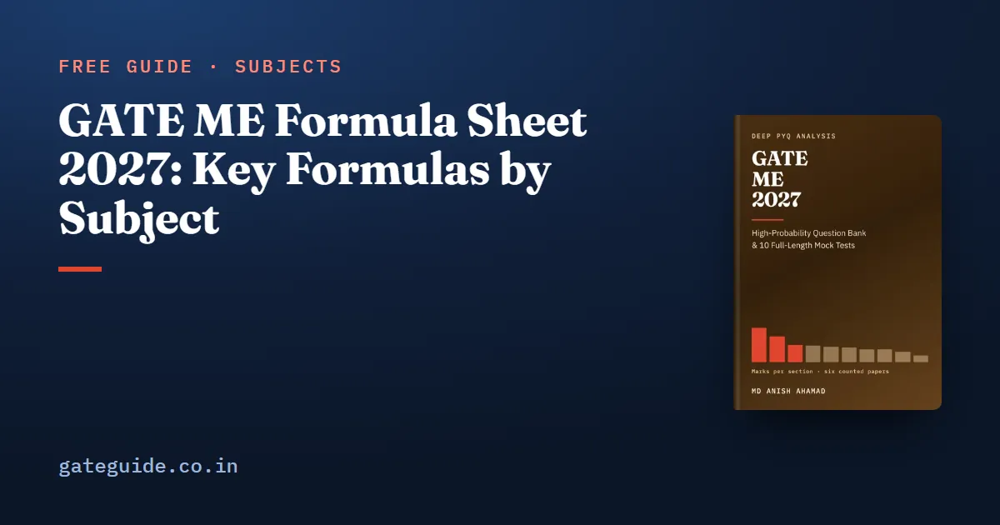

GATE ME Formula Sheet 2027: Key Formulas by Subject
By MD ANISH AHAMADUpdated 4 Oct 20268 min read

This GATE ME formula sheet collects the formulas mechanical engineering questions lean on most, grouped by subject, with the condition or trap to watch for beside each. It is a free selection from the last-minute sheet in the GATE ME 2027 book. Use it to test your recall, then practise each formula on previous-year questions.
Most numerical questions in GATE ME reuse a small set of standard formulas with new numbers.
Every formula carries a condition, such as a thin wall, an isentropic process or a Biot number below 0.1.
Temperatures inside any ratio, power or exponential must be in kelvin; Celsius is safe only in a difference.
The 2027 syllabus adds topics such as PID control, nozzles, combustion and six sigma, so their formulas belong on your sheet too.
You cannot carry paper into the exam (confirm current rules at gate2027.iitm.ac.in), so formulas must be in memory.
How to read this sheet
SI units are used throughout, with g=9.81m/s2. ln is the natural logarithm, and angles inside formulas are in radians. Subscript 1 is an inlet or initial state; subscript 2 is an exit or final state.
The condition of a formula is what must be true for it to hold: steady flow, small damping, a constant failure rate. The Watch out for column gives that condition or the slip that most often costs marks. A formula used outside its condition gives a confident wrong answer.
Engineering Mathematics
Formula
Watch out for
∑λi=traceA, ∏λi=detA; Ak has λk, A−1 has 1/λ
Triangular matrix: eigenvalues sit on the diagonal
Ax=b has a unique solution iff rankA=rank[A∣b]=n
Equal ranks below n give infinitely many
rt−s2>0 and r>0: minimum; r<0: maximum (r=fxx, s=fxy, t=fyy)
rt−s2<0 is a saddle point
L{eat}=s−a1; L{f′}=sF(s)−f(0)
Final value theorem needs every pole of sF(s) in the left half-plane
∮z−af(z)dz=2πif(a)
Only for a inside the curve
Poisson P(k)=k!e−λλk, mean = variance =λ; Binomial mean np, variance np(1−p)
δ: cantilever end load 3EIPL3; simply supported central load 48EIPL3, UDL 384EI5wL4
w is load per length
Pcr=Le2π2EI; Le=L,2L,2L,2L
Pinned, fixed–free, fixed–fixed, fixed–pinned; use the least I
τ=IbVQ
Rectangle: maximum is 1.5 times the mean
Remember: hoop stress is twice longitudinal stress, and J is twice I for a circle. Halving or doubling the wrong one is the commonest slip in this subject.
Theory of Machines and Vibrations
Formula
Watch out for
Kutzbach F=3(n−1)−2j1−j2
n counts the frame
Grashof s+l≤p+q for a fully rotating link
Which link is fixed decides the inversion
Coriolis component 2ωv
Only with sliding on a rotating link
Flywheel ΔE=Iω2Cs, Cs=ωmeanωmax−ωmin
ω in rad/s, not rpm
ωn=k/m=g/δst; ζ=2kmc; ωd=ωn1−ζ2
Series springs add as reciprocals
δ=lnx2x1=1−ζ22πζ
ζ≈δ/(2π) only when small
TR=(1−r2)2+(2ζr)21+(2ζr)2, r=ω/ωn
New in 2027; isolation only for r>2
PID Gc(s)=Kp+sKi+Kds; overshoot e−πζ/1−ζ2
New in 2027; integral action removes the step offset
Machine Design
Formula
Watch out for
Tresca σ1−σ3≤Sy/N; von Mises σ12−σ1σ2+σ22≤Sy/N
Shear yield 0.5Sy against 0.577Sy
Shaft τmax=πd316M2+T2
Equivalent moment uses 21[M+M2+T2]
Goodman Seσa+Sutσm=N1; Soderberg uses Sy
Soderberg is the most conservative
Kf=1+q(Kt−1)
0≤q≤1
L10=(C/P)p million revolutions
p=3 ball, 10/3 roller
Spring δ=Gd48FD3n; Kw=4C−44C−1+C0.615, C=D/d
Wahl factor for stress, not deflection
Clutch, uniform wear T=μW2R1+R2 per friction surface
Multiply by the number of surface pairs
Open belt L=2π(D+d)+2C+4C(D−d)2
New in 2027; crossed belt uses (D+d)2
This page gives a selection. The book's last-minute sheet covers every topic the 2027 syllabus names, each entry with its condition, plus a worked number recomputed before printing. It is part of the GATE ME 2027 book, alongside 942 questions with worked solutions and 10 full mock tests.
Fluid Mechanics
Formula
Watch out for
F=ρghˉA; centre of pressure at hˉ+AhˉIGsin2θ
hˉ is the depth of the centroid
GM=VI−BG
Stable only if GM>0
ρgp+2gV2+z=constant
Steady, incompressible, inviscid, along a streamline
Δp=D232μVL; f=Re64
Laminar only, below Re≈2000
hf=2gDfLV2
f is the Darcy factor
u=∂y∂ψ, v=−∂x∂ψ; V=∇ϕ
New in 2027; ϕ exists only for irrotational flow
TT0=1+2γ−1M2; p0p∗=0.528 for γ=1.4
New in 2027; a converging nozzle never exceeds M=1
Boiling and condensation, new in 2027, are mostly read off the pool-boiling curve: nucleate boiling gives the highest useful h, and dropwise condensation beats filmwise.
Trap: a turbine's isentropic efficiency is actual over ideal work, but a compressor's or pump's is ideal over actual. Inverting one gives a wrong answer that still looks plausible.
Materials, Manufacturing and Metrology
Formula
Watch out for
Packing: BCC 0.68, FCC and HCP 0.74
BCC a=4r/3, FCC a=22r
σt=σ(1+e), εt=ln(1+e)
Valid up to necking only
Chvorinov ts=C(AV)2
Riser must freeze after the casting
Merchant 2ϕ+β−α=90∘; tanϕ=1−rsinαrcosα
r=t/tc is below 1
Taylor VTn=C; least-cost life T=(n1−1)(tc+CmCt)
Maximum production drops the Ct/Cm term
Peak-to-valley roughness 8rf2
r is the nose radius
Tolerance unit i=0.45D1/3+0.001D
D is a geometric mean, in mm
CNC step =360∘pitch×step angle; cylinder force pA out, p(A−a) in
New in 2027
Industrial Engineering
Formula
Watch out for
Q∗=H2DS; EPQ Q∗=H(1−d/p)2DS
At Q∗ ordering cost equals holding cost
Standard time = normal time ×(1+allowance)
Work study is new in 2027
Ft+1=αDt+(1−α)Ft
Larger α responds faster
M/M/1: L=μ−λλ, W=μ−λ1; L=λW
Needs λ<μ
PERT te=6a+4m+b, σ=6b−a
Add variances, not standard deviations
Series R=∏Ri; parallel R=1−∏(1−Ri); R(t)=e−λt
Constant failure rate only
DPMO=units×opportunitiesdefects×106
New in 2027
General Aptitude essentials
Average speed is total distance over total time; for two equal distances it is v1+v22v1v2
The minute hand gains 5.5∘ a minute on the hour hand
Change of base: logakx=k1logax
max(0,P(A)+P(B)−1)≤P(A∩B)≤min(P(A),P(B))
(rn)=r!(n−r)!n!; a set of n elements has 2n subsets
Read the sheet daily in the final two weeks. For each line, say its condition aloud before you use it. In the exam, write your five most fragile formulas on the rough sheet in the first five minutes; the exam-day rules guide explains what you may and may not carry.
Use kelvin inside any temperature ratio, power or exponential.
Use absolute pressure in the ideal-gas law, isentropic ratios and choking.
I=64πd4 for bending, J=32πd4 for torsion.
Hoop stress 2tpd is twice longitudinal stress 4tpd.
Isolation needs r>2; resonance amplitude is 2ζF0/k.
Lumped analysis only when Bi<0.1.
EOQ 2DS/H; M/M/1 needs λ<μ.
Frequently asked questions
Can I take a formula sheet into the GATE ME exam?
No. Candidates cannot carry paper, a calculator, a phone or a watch into the exam hall. The exam provides a virtual calculator, rough sheets and a pen. A useful habit is to write a few easily forgotten formulas on the rough sheet in the first five minutes. Confirm the current exam-day rules at gate2027.iitm.ac.in before the exam.
What are the hoop and longitudinal stresses in a thin cylinder?
For a thin cylinder of diameter d, wall thickness t and internal pressure p, the hoop stress is 2tpd and the longitudinal stress is 4tpd, half the hoop value. A thin sphere carries 4tpd in every direction. The results hold only for a thin wall, with t below about d/20.
When does a spring mounting isolate vibration?
Only when the frequency ratio r=ω/ωn is greater than 2. Below that, the transmissibility ratio is above 1 and the mount passes on more force than it receives. At r=2 it equals 1 for every damping ratio. Above 2, extra damping raises the transmitted force, so isolators use soft springs and light damping.
Which GATE ME 2027 topics are new and need formulas?
The 2027 syllabus names several topics for the first time. They include velocity potential and converging-diverging nozzles, transmissibility ratio, PID controllers and transfer functions, belt drives, boiling and condensation, combustion with air-fuel and equivalence ratio, pump characteristics, additive manufacturing, CNC and actuators, programmable logic controllers, work study and six sigma. Each has at least one formula or rule worth knowing.
How should I revise formulas before GATE ME?
Read a compact formula sheet once a day in the final two weeks and once more on the exam morning. For each formula, know the condition it needs and the trap built around it. Write the unit next to every number, use kelvin inside any temperature ratio, carry full precision and round only the final numerical answer.